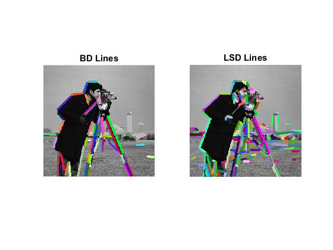

Binary Descriptors for Line Segments
This example shows the functionalities of lines extraction and descriptors computation furnished by cv.LSDDetector and cv.BinaryDescriptor classes.
In this tutorial it will be shown how to:
- use the cv.BinaryDescriptor interface to extract lines and store them in KeyLine objects
- use the same interface to compute descriptors for every extracted line
Sources:
- https://github.com/opencv/opencv_contrib/blob/3.1.0/modules/line_descriptor/samples/lsd_lines_extraction.cpp
- https://github.com/opencv/opencv_contrib/blob/3.1.0/modules/line_descriptor/samples/lines_extraction.cpp
- https://github.com/opencv/opencv_contrib/blob/3.1.0/modules/line_descriptor/samples/compute_descriptors.cpp
Contents
Lines extraction and descriptors computation
In the following snippet of code, it is shown how to detect lines from an image. The LSD extractor is initialized with LSD_REFINE_ADV option; remaining parameters are left to their default values. A mask of ones is used in order to accept all extracted lines, which, at the end, are displayed using random colors for octave 0.
Once keylines have been detected, it is possible to compute their descriptors.
Image
% load image if mexopencv.isOctave() im = fullfile(mexopencv.root(),'test','blox.jpg'); else im = which('cameraman.tif'); end img = cv.imread(im, 'Color',true); % create binary mask mask = ones(size(img,1), size(img,2), 'uint8'); whos img mask
Name Size Bytes Class Attributes img 256x256x3 196608 uint8 mask 256x256 65536 uint8
Initialize
% create BinaryDescriptor/LSDDetector objects with default parameters
bd = cv.BinaryDescriptor();
lsd = cv.LSDDetector();Extract lines
keylinesBD = bd.detect(img, 'Mask',mask) keylinesLSD = lsd.detect(img, 'Scale',2, 'NumOctaves',1, 'Mask',mask)
keylinesBD =
1×53 struct array with fields:
angle
class_id
octave
pt
response
size
startPoint
endPoint
startPointInOctave
endPointInOctave
lineLength
numOfPixels
keylinesLSD =
1×166 struct array with fields:
angle
class_id
octave
pt
response
size
startPoint
endPoint
startPointInOctave
endPointInOctave
lineLength
numOfPixels
Compute descriptors
descriptorsBD = bd.compute(img, keylinesBD); descriptorsLSD = bd.compute(img, keylinesLSD); whos descriptorsBD descriptorsLSD
Name Size Bytes Class Attributes descriptorsBD 53x32 1696 uint8 descriptorsLSD 166x32 5312 uint8
Plot
% lines extracted from octave 0 keylinesBD = keylinesBD([keylinesBD.octave] == 0); keylinesLSD = keylinesLSD([keylinesLSD.octave] == 0); % draw line between extremes using random colors outBD = img; outLSD = img; for i=1:numel(keylinesBD) outBD = cv.line(outBD, keylinesBD(i).startPoint, keylinesBD(i).endPoint, ... 'Color',randi([0 255],[1 3]), 'Thickness',3); end for i=1:numel(keylinesLSD) outLSD = cv.line(outLSD, keylinesLSD(i).startPoint, keylinesLSD(i).endPoint, ... 'Color',randi([0 255],[1 3]), 'Thickness',3); end subplot(121), imshow(outBD), title('BD Lines') subplot(122), imshow(outLSD), title('LSD Lines')